小鼠电视
巴掌大的屏幕，也能换台、追剧、听你说话。
服务器把直播和视频实时转码，经 Wi-Fi 送到 FoloToy AI Passport 和星智 Cube 1.54 的小屏上。央视卫视、B 站和 YouTube 的 UP 主、一整部动画片，手机上点一下，或者按住 OK 说一句，就换过去。
手机登录 /tv/ · 电脑登录 /tv/console · 新设备配网 /tv/wifi
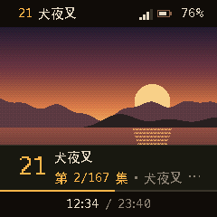
上：小电视屏幕（固件绘制） 下：手机遥控页同步显示
能做什么
以下功能都已上线
直播频道，按组排好
央视、卫视、港澳台、国际、音乐、动画影视，按 OK 打开频道表，上下键换台。台号和台名在屏幕顶上一条，旁边是信号格和电量。
直播源来自公开网络，个别台失效时会自动换到下一个台；频道以实际为准。
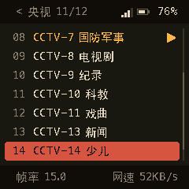
UP 主频道和剧集频道
把 B 站或 YouTube 的 UP 主加成一个台：从最新的、还没看过的视频开始播，播完接下一个；换走再回来，从停下的地方接着看。
番剧、合集或播放列表加成剧集台，按集数顺序播，记得看到第几集，手机上可以选集。屏幕上有进度条和「第几集」。
- 18海尔兄弟B站
- 19舒克和贝塔B站
- 21犬夜叉第 2/167 集
- 22葫芦兄弟B站
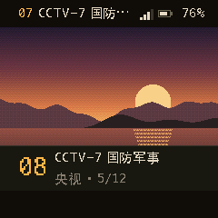
11 只像素宠物，和「只听声音」
等待、暂停、连不上的时候，你选的宠物在屏幕上陪着。切到只听声音，画面关掉、省流量也省电，宠物跟着节目的声音跳；十秒没人动，它就睡着了。
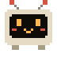
电电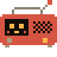
豆豆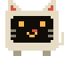
咪咪- 波波
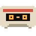
卡卡- 灯灯
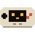
按按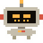
铁铁- 飘飘
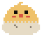
啾啾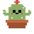
刺刺
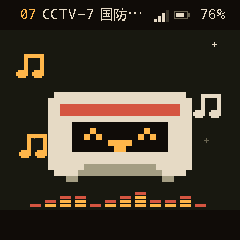
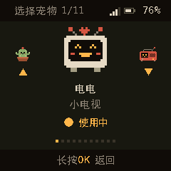
声波配网：手机放一段声音就连上
手机打开配网页，填好 Wi-Fi 名字和密码，靠近小电视点「发送」，手机放出一串短促的声音，小电视听到就连上了。不用装 App，手机也不用切去连设备的热点。
小电视在线时，还能在手机遥控或电脑版里远程添加、删除、切换它记住的 Wi-Fi，比如出门前先把目的地的 Wi-Fi 加上。
投屏从手机发一个视频
在 B 站或 YouTube App 里复制视频链接，粘贴到遥控页，小电视切到「我的投屏」播放，播完回到原来的台。
遥控手机就是遥控器
换台、快进快退 30 秒、暂停、上一集下一集、音量、亮度、换宠物、只听声音。是网页，「添加到主屏幕」后像 App 一样打开。
电脑电脑版控制台
电脑上打开控制台，用已登录的手机扫一下屏幕上的二维码就登录了。管设备、订阅、投屏、选集，大屏幕上更顺手。
家人一家人一起用
管理员发邀请链接给家人，各自有账号；扫小电视上的二维码就能把它绑到自己名下。来家里的客人扫访客码就能遥控。
屏幕该看的都在小屏上
进度条、第几集、换台横幅，音量和亮度的提示，在手机上调了，小电视屏幕上也会显示。
订阅粘贴链接，多一个台
在遥控页粘贴 UP 主主页、番剧页、合集或 YouTube 播放列表的链接，频道表里就多一个台。
你可以这样说
语音在我们自己的服务器上识别
看电视或在频道表里，按住 OK 说话，说完松开。只有一个结果就直接执行；有几个可能时列出来让你挑。
- 换台
湖南卫视
中央五套
下一个台
- 追剧
看犬夜叉第20集
下一集
从头播
- 跳转
跳到一半
快进 30 秒
跳到3分20秒
- 搜索
搜视频猫和老鼠
搜UP主老番茄
油管搜视频 lofi
- 设置
大声一点
亮一点
只听声音
- 问一问
现在播的是什么
这是第几集
有哪些动画片
- 定时
一小时后关机
看完这集就停
取消定时
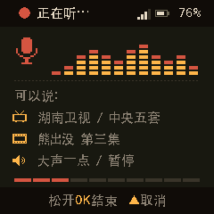
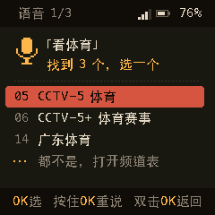
支持的设备
两台都是 ESP32 小设备
星智 Cube 1.54
小智 AI 玩具的外壳，刷上电视固件。
- 芯片ESP32-S3
- 屏幕1.54 英寸，240×240
- 按键右侧四个：上、下、OK、电源
- 语音按住 OK 说话
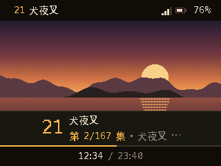
FoloToy AI Passport
卡片大小的开放式 AI 设备。电视和 Muse AI 固件装在一起，两边都能用。
- 芯片ESP32-C3
- 屏幕卡片横着拿，宽屏画面
- 并存与 Muse AI 固件双系统
- 遥控手机、电脑、语音都能用
三步上手
只要一部手机
-
开机
第一次开机，或者附近没有它认识的 Wi-Fi，小电视会显示配网画面，上面有一个二维码。
-
声波配网
手机扫这个码，打开声波配网页（也可以直接打开 /tv/wifi）。填 Wi-Fi 名字和密码，把手机音量调大、靠近小电视（半米以内），点「发送」。屏幕显示收到的进度，连上后自动开始播放。
-
扫码登录
打开小电视的状态页（星智 Cube：双击上键或下键），用手机扫上面的二维码：手机登录，新设备同时绑定到你的账号。电脑上打开 /tv/console，用这部手机扫一下就能登录电脑版。
开始看。打开遥控换台、选集、投屏；或者按住 OK，说「看犬夜叉第20集」。
隐私
能不经过服务器的，就不经过
Wi-Fi 密码不出手机
声波配网页不往网络上发任何东西：Wi-Fi 名字和密码只变成声音，传给你面前这台小电视。
远程改 Wi-Fi 也是加密的
在遥控页给小电视加 Wi-Fi 时，密码在手机上加密，只有这台小电视解得开；已经保存的密码，网页上也看不到。
每台设备一把钥匙
每台小电视有自己的密钥，绑在你的账号下。没有被邀请的人看不到、也控制不了你的设备，家人和访客能做的事也分开管。
少记一点
登录链接带着密钥，所以这些地址不记访问日志；登录记录里手机的网络地址只保留到网段。
常见问题
更多操作见使用说明。
支持 5G Wi-Fi 吗？
不支持，只能连 2.4G 的 Wi-Fi。路由器的 2.4G 和 5G 分开设置时，选 2.4G 那个名字。
需要装 App 吗？
不用。配网、遥控、电脑版都是网页，微信扫码也能打开。遥控页「添加到主屏幕」以后，就像一个 App。
能在手机上听声音吗？
即将推出。现在可以把小电视切到「只听声音」，画面关掉、只放声音。
有定时关机吗？
有。按住 OK 说「一小时后关机」「半小时后暂停」或「看完这集就停」，到点小电视会暗下来并暂停；说「取消定时」就取消，「还剩多久关机」可以问剩余时间。
换了地方、换了 Wi-Fi 怎么办？
小电视最多记住 10 个 Wi-Fi，开机连附近能找到的那个。一分钟还连不上，它会自己进入配网画面，再用手机发一次声音就行。小电视在线时，也可以提前在遥控页把新地方的 Wi-Fi 加上。
画面卡顿怎么办？
靠近路由器一些，信号少于 2 格时容易卡。实在不行，切到「只听声音」。
YouTube 的视频为什么要等一会儿？
YouTube 的视频要先由海外节点取回再转码，第一次播大约等 20 到 40 秒才出画面。
番剧都能看吗？
番剧只播免费的集。语音搜索搜不到收费、充电专属的视频，也搜不到直播间。
家里人怎么一起用？
管理员在电脑版生成邀请链接或二维码发给家人，家人用它开通自己的账号。来家里的客人扫「访客码」就能遥控；Wi-Fi 这类设置只有主人看得到。